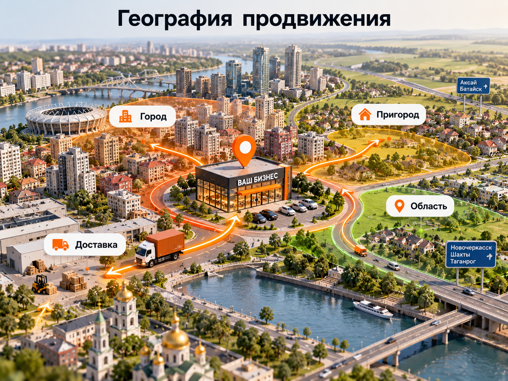

Блог о платном трафике
Реклама на Авито в Ростове-на-Дону: настройка и продвижение
Реклама на Авито в Ростове-на-Дону помогает бизнесу привлекать покупателей и заказчиков через объявления и рекламные инструменты площадки. Для результата недостаточно просто оплатить продвижение. Нужно правильно оформить предложения, выбрать географию, проверить конкурентов и оценивать стоимость реальных обращений.
Я Максим Мирошников, специалист по платному трафику. Работаю с продвижением на Авито и другими рекламными каналами. Помогаю бизнесу разобраться, какие объявления стоит усиливать, куда направлять бюджет и как оценивать эффективность рекламы.
Раньше я жил в Ростове-на-Дону, поэтому отдельно рассматриваю продвижение для местных компаний. Работаю удалённо, проекты веду лично, без агентства и посредников.

Что входит в настройку рекламы на Авито
Настройка рекламы на Авито включает анализ спроса, подготовку объявлений, выбор платных инструментов и последующую оптимизацию. Конкретный состав работ зависит от ниши, количества объявлений и состояния действующего аккаунта.
Обычно я рассматриваю следующие задачи:
- Анализ спроса и конкурентов. Проверка предложений в нужной категории, цен, фотографий, условий и географии размещения.
- Структура объявлений. Разделение товаров или услуг на предложения, которые соответствуют разным потребностям покупателей.
- Подготовка карточек. Заголовки, фотографии, характеристики, описания, цены и условия обращения.
- Настройка продвижения. Подбор доступных платных инструментов и распределение бюджета между объявлениями.
- Аналитика обращений. Оценка звонков, сообщений, расходов и качества потенциальных клиентов.
- Оптимизация. Доработка слабых объявлений, тестирование предложений и перераспределение расходов.
Если объявления уже размещены, сначала полезно провести аудит. Иногда проблема не в отсутствии платного продвижения, а в том, что существующие карточки плохо превращают просмотры в обращения.
Продвижение объявлений и Авито Реклама: в чём разница
В 2026 году на Авито существуют два разных подхода: продвижение собственных объявлений внутри площадки и размещение рекламы через отдельный кабинет Авито Рекламы.
Они отличаются по способу привлечения аудитории, настройкам и задачам бизнеса.
| Параметр | Продвижение объявлений | Авито Реклама |
|---|---|---|
| Что продвигаем | Конкретные товары и услуги | Рекламные креативы и предложения |
| Куда приходит пользователь | В объявление на Авито | На сайт или другой выбранный ресурс, в том числе Авито |
| Основные инструменты | Увеличение просмотров, выделение объявления, тарифные модели | Нативные объявления, баннеры, видео и таргетинги |
| Модель оплаты | Зависит от категории, тарифа и инструмента | В зависимости от формата, за клики или показы |
| Что анализируем | Просмотры, контакты, заказы | Показы, клики, действия на целевом ресурсе |
| Когда выбирать | Если задача - получать обращения по опубликованным объявлениям | Если требуется отдельная рекламная кампания для привлечения аудитории |
Для местного автосервиса, который уже размещает услуги на Авито, логично сначала оценить эффективность собственных объявлений.
Для компании, которая хочет привлекать пользователей на сайт, может подойти отдельный кабинет Авито Рекламы.
Эти инструменты не являются взаимозаменяемыми. Выбор зависит от того, где бизнес принимает обращения и какой результат хочет получить.
Как я подхожу к запуску продвижения
Работу начинаю с определения спроса, экономики и целевого действия. Только после этого выбираю рекламные инструменты.
Проверка существующего спроса
Сначала важно понять, какие предложения уже есть в нужной категории, как их представляют конкуренты и насколько они сопоставимы с предложением бизнеса.
Например, компании, которая занимается ремонтом автомобилей, не всегда выгодно рекламировать все услуги одним объявлением. Человек, который ищет замену тормозных колодок, и человек, которому нужна диагностика двигателя, решают разные задачи.
Для них могут потребоваться разные заголовки, фотографии и предложения.
При этом создание отдельных объявлений должно соответствовать правилам площадки. Искусственно размножать одинаковые карточки ради охвата не стоит.
Проверка экономики
До запуска определяю, какую стоимость обращения бизнес может себе позволить.
Если заказ приносит небольшую прибыль, платное продвижение с высокой стоимостью клиента может оказаться нерентабельным даже при хорошем количестве звонков.
Если же бизнес продаёт дорогую услугу с высокой маржой, допустимые расходы на привлечение могут быть выше.
Подготовка и тестирование
После анализа выбираются объявления для продвижения, определяется тестовый бюджет и фиксируются показатели, по которым будет оцениваться результат.
Необязательно сразу продвигать все предложения. Начать разумнее с тех, для которых понятны спрос, условия продажи и экономика.
Как оформить объявление, чтобы получать больше обращений
Объявление на Авито должно отвечать на запрос покупателя ещё до того, как он откроет карточку. Заголовок, первое изображение и цена помогают пользователю решить, стоит ли изучать предложение.
Например, для автосервиса слишком общий заголовок:
*Ремонт автомобилей в Ростове*
можно заменить более конкретным:
*Замена тормозных колодок в Ростове-на-Дону*
Если услуга действительно выделена в самостоятельное предложение, второй заголовок точнее описывает потребность клиента.
Внутри объявления важны:
- Фотографии реальной услуги, товара или результата работы.
- Понятное описание того, что входит в предложение.
- Достоверная цена и условия, от которых она зависит.
- Информация о сроках, доставке или возможности выезда, если она существенна.
- Заполненный профиль и сведения, которые помогают оценить надёжность продавца.
На Авито не нужно превращать описание в длинный набор поисковых запросов. Ключевые слова должны естественно отражать предложение, а не мешать его читать.
Платное продвижение увеличивает возможность получить просмотры, но не исправляет слабую карточку автоматически. Поэтому перед увеличением бюджета сначала проверяется качество самого объявления.
Как выбрать географию рекламы в Ростове-на-Дону
География продвижения должна соответствовать территории, на которой бизнес действительно может обслуживать клиентов или продавать товары.
Для разных направлений границы целевого спроса различаются.
Локальные услуги. Автосервису, салону красоты или мастерской важно учитывать удобство расположения и готовность клиента приехать.
Услуги с выездом. Для ремонта квартир, установки кондиционеров или строительства география зависит от фактической территории обслуживания. Помимо Ростова-на-Дону, это могут быть Батайск, Аксай и другие населённые пункты области.
Товары с доставкой. Продавец оборудования или мебели может работать с покупателями значительно дальше места нахождения компании, если доставка экономически оправданна.

Настройки географии и возможности размещения зависят от категории и выбранного рекламного инструмента.
Поэтому нельзя просто включить максимально широкую территорию и рассчитывать на рост продаж. Дополнительные просмотры из регионов, где бизнес не может выполнить заказ, не имеют практической ценности.
Сколько стоит реклама на Авито в Ростове-на-Дону
Единой стоимости рекламы на Авито для всех компаний нет. Цена зависит от категории, конкуренции, региона, количества объявлений и выбранного способа продвижения.
При планировании расходов важно разделять три составляющие.
| Расход | Что оплачивается |
|---|---|
| Размещение и тариф | Публикация объявлений и услуги аккаунта, если они платные |
| Рекламный бюджет | Дополнительная видимость объявлений или рекламные кампании |
| Работа специалиста | Анализ, подготовка, настройка и оптимизация |
В некоторых категориях используются модели оплаты за просмотры или другие целевые действия. В других доступны платные инструменты увеличения видимости отдельных объявлений.
Точные условия и стоимость нужно проверять в актуальном кабинете Авито для конкретной категории.
Стоимость работы специалиста также зависит от задачи. Подготовка нескольких объявлений и системное ведение большого каталога требуют разного объёма работы.
Поэтому бюджет правильнее определять после первичного анализа, а не назначать одинаковую сумму каждому бизнесу.
Как рассчитать стоимость обращения и клиента
Эффективность продвижения на Авито нужно оценивать по обращениям, которые могут превратиться в продажи, а не только по просмотрам объявлений.
Для этого достаточно последовательно считать несколько показателей.
Стоимость обращения:
CPL = Расходы на рекламу / Количество обращений
Стоимость квалифицированного обращения:
CPL квалифицированного лида = Расходы / Количество подходящих обращений
Стоимость привлечения покупателя:
CAC = Расходы на рекламу / Количество полученных клиентов
Пример расчёта
Предположим, компания из Ростова-на-Дону потратила на рекламу 20 000 рублей и получила следующие результаты:
| Показатель | Значение |
|---|---|
| Рекламные расходы | 20 000 ₽ |
| Все обращения | 40 |
| Целевые обращения | 25 |
| Полученные заказы | 8 |
| Стоимость обращения | 500 ₽ |
| Стоимость целевого обращения | 800 ₽ |
| Стоимость привлечения клиента | 2500 ₽ |
Это условный пример расчёта, а не статистика рынка Авито в Ростове-на-Дону. В нём учтён только рекламный бюджет, без оплаты специалиста и других расходов.
Чтобы определить окупаемость, нужно сравнить стоимость привлечения клиента с валовой прибылью от заказа и остальными затратами бизнеса.
Если реклама приводит много дешёвых сообщений, но почти не даёт продаж, низкий CPL сам по себе не означает хорошего результата.
Именно поэтому я считаю важным получать обратную связь от бизнеса: какие обращения оказались целевыми, какие дошли до заказа и почему остальные не конвертировались.
Когда нужно подключать платное продвижение
Платное продвижение имеет смысл, когда предложение соответствует спросу, объявление достаточно хорошо оформлено, а бизнес понимает допустимую стоимость клиента.
Если карточка уже получает просмотры и обращения, можно проверить, даст ли увеличение видимости дополнительный объём клиентов по приемлемой цене.
Если объявление почти не открывают, сначала стоит проверить его положение среди конкурентов, категорию, заголовок, фотографию и цену.
Если просмотры есть, а обращений нет, проблема может заключаться в описании, условиях продажи, самом предложении или доверии к продавцу.
Покупать дополнительный охват без такого анализа рискованно: расходы могут вырасти быстрее количества заказов.
Почему реклама на Авито не приносит клиентов
Причину слабого результата можно предварительно определить по тому, на каком этапе перестают появляться действия пользователей.
| Ситуация | Что проверить |
|---|---|
| Мало показов | Категорию, спрос, конкуренцию, настройки и доступность продвижения |
| Есть показы, мало просмотров | Заголовок, главное фото, цену и привлекательность предложения |
| Много просмотров, мало обращений | Описание, характеристики, условия, доверие к продавцу |
| Много обращений, мало продаж | Качество лидов, цену, обработку сообщений и конкурентоспособность услуги |
| Продажи есть, но реклама не окупается | Стоимость клиента, маржу, расходы и распределение бюджета |
Важно не путать проблему рекламы с проблемой продаж.
Например, если люди пишут по объявлению, но долго не получают ответа, улучшение рекламной кампании не обязательно исправит ситуацию.
А если обращаются преимущественно покупатели, которым не подходит цена или условия, нужно выяснить, почему объявление привлекает такую аудиторию.
Хорошая реклама на Авито не просто увеличивает число контактов. Она должна помогать получать подходящих клиентов с экономически оправданными расходами.
Каким компаниям Ростова-на-Дону стоит тестировать Авито
Авито имеет смысл рассматривать прежде всего там, где покупатель готов изучать и сравнивать конкретные предложения.
К потенциально подходящим направлениям относятся:
- автосервисы и автомобильные услуги;
- ремонт, строительство и услуги мастеров;
- продажа мебели и товаров для дома;
- оборудование, инструменты и отдельные B2B-товары;
- недвижимость и связанные с ней услуги;
- другие категории товаров и услуг, представленные на площадке.
Но присутствие категории на Авито не гарантирует, что реклама окажется прибыльной.
Сначала нужно проверить реальный спрос, конкуренцию и допустимую стоимость клиента.
Если бизнес выбирает между несколькими источниками обращений, полезно сравнить Авито и Яндекс Директ. Эти каналы могут решать разные задачи, поэтому выбирать их только по предполагаемой цене клика неправильно.
Как оцениваю результат после запуска
После подключения продвижения я смотрю не только на абсолютные показатели, но и на их изменение.
Сравнивать объявления лучше за сопоставимые периоды, учитывая изменения бюджета, цены, спроса и других условий.
Если одно предложение даёт много просмотров, но почти не приносит обращений, увеличение его бюджета требует дополнительных оснований.
Если другое объявление получает меньше внимания, но приводит целевых клиентов по приемлемой цене, оно может оказаться более выгодным.
Для этого нужно разделять показатели отдельных объявлений, сопоставлять расходы и регулярно проверять качество обращений.
Не существует универсальной нормы стоимости лида для всех категорий Авито. Допустимая стоимость определяется экономикой конкретного бизнеса.
Мой опыт работы с локальной рекламой
Я занимаюсь интернет-рекламой более 10 лет и работаю с проектами, в которых важны стоимость обращения, качество потенциальных клиентов и окупаемость привлечения.
Например, на сайте есть кейс продвижения автосервиса в Рыбинске и кейс центра психологии в Липецке.
Это примеры работы с Яндекс Директом, а не с Авито. Я не выдаю их за результаты продвижения на другой площадке.
Но принцип оценки эффективности одинаков: важно учитывать реальную географию бизнеса, качество обращений и стоимость привлечения клиентов.
Проекты веду лично. Работаю удалённо, без помощников, учеников и промежуточных менеджеров.
Как заказать настройку рекламы на Авито
Если вашему бизнесу нужна реклама на Авито в Ростове-на-Дону, начинать лучше с оценки текущего положения.
Если объявления уже опубликованы, сначала стоит проверить статистику, содержание карточек, расходы и результаты.
Если бизнес ещё не размещался на Авито, нужно определить подходящие категории, оценить предложения конкурентов и рассчитать бюджет на первоначальный тест.
По итогам анализа можно определить состав работ: подготовка объявлений, настройка продвижения или дальнейшее ведение.
Я работаю напрямую с заказчиками как частный специалист по платному трафику. Условия сотрудничества, информация обо мне и контакты находятся на главной странице naklikay.ru.